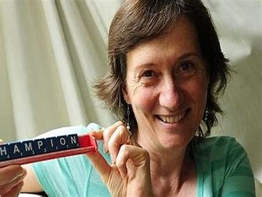
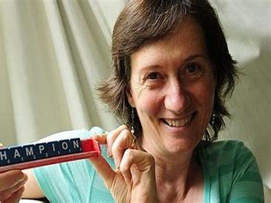
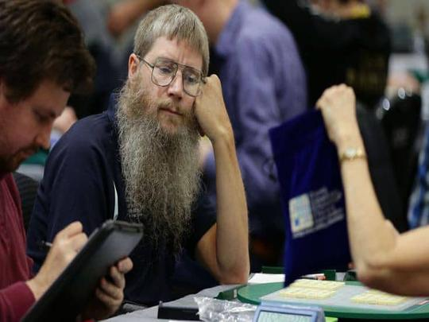

Nigel Richards est un joueur de Scrabble néo-zélandais, souvent considéré comme l'un des plus grands de tous les temps. Né en 1967, il découvre le Scrabble à l'âge adulte et commence à jouer sérieusement au milieu des années 1990. Sa capacité exceptionnelle à mémoriser des mots et à élaborer des stratégies l'a rapidement propulsé au sommet du jeu. Richards a remporté son premier championnat du monde en 2007, marquant le début d'une série impressionnante de victoires. En plus de ses multiples titres mondiaux en anglais, Richards a étonné le monde entier en 2015 lorsqu'il remporta le championnat du monde de Scrabble en français, malgré le fait qu'il ne parlait pas la langue. Il a mémorisé les mots du dictionnaire francophone en seulement neuf semaines. Nigel Richards est respecté pour son dévouement, son talent unique et sa capacité à exceller dans plusieurs versions linguistiques du jeu, consolidant ainsi sa réputation de légende vivante du Scrabble..
Histoire du Scrabble : Des Origines à Aujourd'hui
Origines et Développement Initial:
Le Scrabble a été inventé en 1938 par Alfred Mosher Butts, un architecte américain au chômage, qui cherchait à créer un jeu combinant la chance et la stratégie. Inspiré par les mots croisés et d’autres jeux de lettres existants, il conçut une grille de 15x15 cases et distribua des lettres en fonction de leur fréquence d’utilisation en anglais. Butts appela son jeu « Lexiko », puis « Criss-Cross Words ». Cependant, malgré son innovation, il n’attira pas l’intérêt des éditeurs à l’époque.
Popularisation et Expansion Mondiale:
Dans les années 1940, James Brunot, un entrepreneur, prit contact avec Alfred Butts. Brunot vit le potentiel du jeu et proposa de le produire à plus grande échelle tout en modifiant certaines règles. C’est lui qui renomma le jeu « Scrabble », un mot signifiant « gratter frénétiquement » en anglais. En 1948, Brunot déposa le brevet du jeu et commença à le produire modestement. Les premières années furent difficiles, avec des ventes limitées.
Popularisation du jeu
Le véritable tournant arriva au début des années 1950, lorsqu’un cadre d’un grand magasin new-yorkais découvrit le jeu lors de ses vacances et décida de le vendre dans ses magasins. Rapidement, la demande explosa, et Brunot, submergé par les commandes, céda les droits de production à Selchow and Righter, une entreprise de jeux.
Expansion mondiale
Dans les décennies qui suivirent, le Scrabble se propagea à travers le monde. Traduit en de nombreuses langues, il devint un jeu populaire aussi bien en famille qu'en compétition. Des tournois officiels furent organisés, et le Scrabble devint un jeu de référence pour les amateurs de langue et de stratégie. Aujourd’hui, des millions de personnes jouent au Scrabble dans différentes langues, et il continue de captiver des générations entières.
Quelques joueurs qui ont marqué leurs générations
 

Les joueurs de Scrabble de haut niveau sont reconnus pour leur mémoire lexicale exceptionnelle et leur capacité à former des mots stratégiques sur le plateau. Ils excellent non seulement dans la connaissance des mots, mais aussi dans la gestion du plateau et le calcul des probabilités.
Nigel Richards
Aujourd'hui, le Scrabble continue d'évoluer avec l'ère numérique. Des applications mobiles et des versions en ligne ont rendu le jeu plus accessible que jamais, permettant aux joueurs du monde entier de s'affronter. Les tournois en ligne et les compétitions internationales maintiennent l'intérêt pour ce jeu classique, qui reste un défi intellectuel et linguistique apprécié par des millions de personnes.